锁是计算机协调多个进程或线程并发访问某一资源的机制。在数据库中，除传统的计算资源（如CPU、RAM、I/O等）的争用以外，数据也是一种供许多用户共享的资源。如何保证数据并发访问的一致性、有效性是所有数据库必须解决的一个问题，锁冲突也是影响数据库并发访问性能的一个重要因素。从这个角度来说，锁对数据库而言显得尤其重要，也更加复杂。本章我们着重讨论MySQL锁机制的特点，常见的锁问题，以及解决MySQL锁问题的一些方法或建议。
MySQL锁概述
相对其他数据库而言，MySQL的锁机制比较简单，其最显著的特点是不同的存储引擎支持不同的锁机制。 比如，MyISAM和MEMORY存储引擎采用的是表级锁（table-level locking）； BDB存储引擎采用的是页面锁（page-level locking），但也支持表级锁； InnoDB存储引擎既支持行级锁（row-level locking），也支持表级锁，但默认情况下是采用行级锁。
MySQL这3种锁的特性可大致归纳如下。 开销、加锁速度、死锁、粒度、并发性能 表级锁：开销小，加锁快；不会出现死锁；锁定粒度大，发生锁冲突的概率最高,并发度最低。 行级锁：开销大，加锁慢；会出现死锁；锁定粒度最小，发生锁冲突的概率最低,并发度也最高。 页面锁：开销和加锁时间界于表锁和行锁之间；会出现死锁；锁定粒度界于表锁和行锁之间，并发度一般。
从上述特点可见，很难笼统地说哪种锁更好，只能就具体应用的特点来说哪种锁更合适！
仅从锁的角度来说：表级锁更适合于以查询为主，只有少量按索引条件更新数据的应用，如Web应用；而行级锁则更适合于有大量按索引条件并发更新少量不同数据，同时又有并发查询的应用，如一些在线事务处理（OLTP）系统。
下面几节我们重点介绍MySQL表锁和 InnoDB行锁的问题，由于BDB已经被InnoDB取代，即将成为历史，在此就不做进一步的讨论了。
MyISAM表锁
MyISAM存储引擎只支持表锁，这也是MySQL开始几个版本中唯一支持的锁类型随着应用对事务完整性和并发性要求的不断提高，MySQL才开始开发基于事务的存储引擎，后来慢慢出现了支持页锁的BDB存储引擎和支持行锁的InnoDB存储引擎（实际 InnoDB是单独的一个公司，现在已经被Oracle公司收购）。 但是MyISAM的表锁依然是使用最为广泛的锁类型。本节将详细介绍MyISAM表锁的使用。
查询表级锁争用情况
xxxxxxxxxx可以通过检查table_locks_waited和table_locks_immediate状态变量来分析系统上的表锁定争夺：mysql> show status like 'table%';+-----------------------+-------+| Variable_name | Value |+-----------------------+-------+| Table_locks_immediate | 2979 || Table_locks_waited | 0 |+-----------------------+-------+2 rows in set (0.00 sec))如果Table_locks_waited的值比较高，则说明存在着较严重的表级锁争用情况。MySQL表级锁的锁模式
MySQL的表级锁有两种模式：表共享读锁（Table Read Lock）和表独占写锁（Table Write Lock）。锁模式的兼容性如表所示。
可见，对MyISAM表的读操作，不会阻塞其他用户对同一表的读请求，但会阻塞对同一表的写请求； 对 MyISAM表的写操作，则会阻塞其他用户对同一表的读和写操作； MyISAM表的读操作与写操作之间，以及写操作之间是串行的！根据如表20-2所示的例子可以知道，当一个线程获得对一个表的写锁后，只有持有锁的线程可以对表进行更新操作。 其他线程的读、写操作都会等待，直到锁被释放为止。
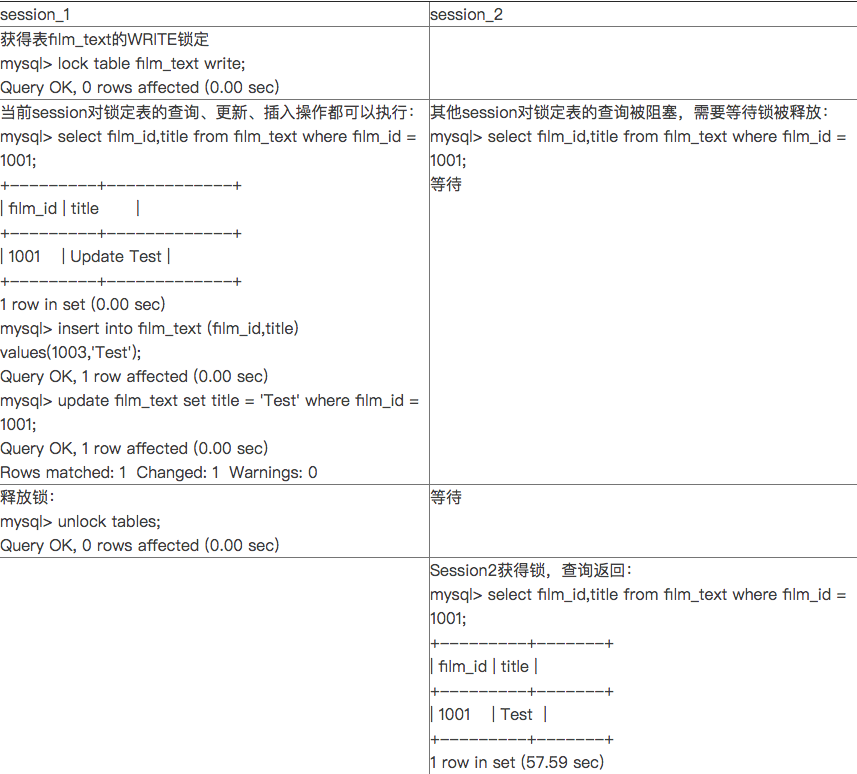
如何加表锁
MyISAM在执行查询语句（SELECT）前，会自动给涉及的所有表加读锁，在执行更新操作（UPDATE、DELETE、INSERT等）前，会自动给涉及的表加写锁，这个过程并不需要用户干预，因此，用户一般不需要直接用LOCK TABLE命令给MyISAM表显式加锁。在示例中，显式加锁基本上都是为了方便而已，并非必须如此。
给MyISAM表显示加锁，一般是为了在一定程度模拟事务操作，实现对某一时间点多个表的一致性读取。
例如，有一个订单表orders，其中记录有各订单的总金额total，同时还有一个订单明细表order_detail，其中记录有各订单每一产品的金额小计 subtotal，假设我们需要检查这两个表的金额合计是否相符，可能就需要执行如下两条SQL：
xxxxxxxxxxSelect sum(total) from orders;Select sum(subtotal) from order_detail;这时，如果不先给两个表加锁，就可能产生错误的结果，因为第一条语句执行过程中，order_detail表可能已经发生了改变。因此，正确的方法应该是：Lock tables orders read local, order_detail read local;Select sum(total) from orders;Select sum(subtotal) from order_detail;Unlock tables;要特别说明以下两点内容。
- 1.上面的例子在LOCK TABLES时加了“local”选项，其作用就是在满足MyISAM表并发插入条件的情况下，允许其他用户在表尾并发插入记录，有关MyISAM表的并发插入问题，在后面的章节中还会进一步介绍。
- 2.在用LOCK TABLES给表显式加表锁时，必须同时取得所有涉及到表的锁，并且MySQL不支持锁升级。也就是说，在执行LOCK TABLES后，只能访问显式加锁的这些表，不能访问未加锁的表；同时，如果加的是读锁，那么只能执行查询操作，而不能执行更新操作。其实，在自动加锁的情况下也基本如此，MyISAM总是一次获得SQL语句所需要的全部锁。这也正是MyISAM表不会出现死锁（Deadlock Free）的原因。
在如表20-3所示的例子中，一个session使用LOCK TABLE命令给表film_text加了读锁，这个session可以查询锁定表中的记录，但更新或访问其他表都会提示错误；同时，另外一个session可以查询表中的记录，但更新就会出现锁等待。
当使用LOCK TABLES时，不仅需要一次锁定用到的所有表，而且，同一个表在SQL语句中出现多少次，就要通过与SQL语句中相同的别名锁定多少次，否则也会出错！举例说明如下。
xxxxxxxxxx（1）对actor表获得读锁：mysql> lock table actor read;Query OK, 0 rows affected (0.00 sec)（2）但是通过别名访问会提示错误：mysql> select a.first_name,a.last_name,b.first_name,b.last_name from actor a,actor b where a.first_name = b.first_name and a.first_name = 'Lisa' and a.last_name = 'Tom' and a.last_name <> b.last_name;ERROR 1100 (HY000): Table 'a' was not locked with LOCK TABLES（3）需要对别名分别锁定：mysql> lock table actor as a read,actor as b read;Query OK, 0 rows affected (0.00 sec)（4）按照别名的查询可以正确执行：mysql> select a.first_name,a.last_name,b.first_name,b.last_name from actor a,actor b where a.first_name = b.first_name and a.first_name = 'Lisa' and a.last_name = 'Tom' and a.last_name <> b.last_name;+------------+-----------+------------+-----------+| first_name | last_name | first_name | last_name |+------------+-----------+------------+-----------+| Lisa | Tom | LISA | MONROE |+------------+-----------+------------+-----------+1 row in set (0.00 sec)并发插入（Concurrent Inserts）
上文提到过MyISAM表的读和写是串行的，但这是就总体而言的。在一定条件下，MyISAM表也支持查询和插入操作的并发进行。
MyISAM存储引擎有一个系统变量concurrent_insert，专门用以控制其并发插入的行为，其值分别可以为0、1或2。
- 1.当concurrent_insert设置为0时，不允许并发插入。
- 2.当concurrent_insert设置为1时，如果MyISAM表中没有空洞（即表的中间没有被删除的行），MyISAM允许在一个进程读表的同时，另一个进程从表尾插入记录。这也是MySQL的默认设置。
- 3.当concurrent_insert设置为2时，无论MyISAM表中有没有空洞，都允许在表尾并发插入记录。
在如表20-4所示的例子中，session1获得了一个表的READ LOCAL锁，该线程可以对表进行查询操作，但不能对表进行更新操作；其他的线程（session2），虽然不能对表进行删除和更新操作，但却可以对该表进行并发插入操作，这里假设该表中间不存在空洞。
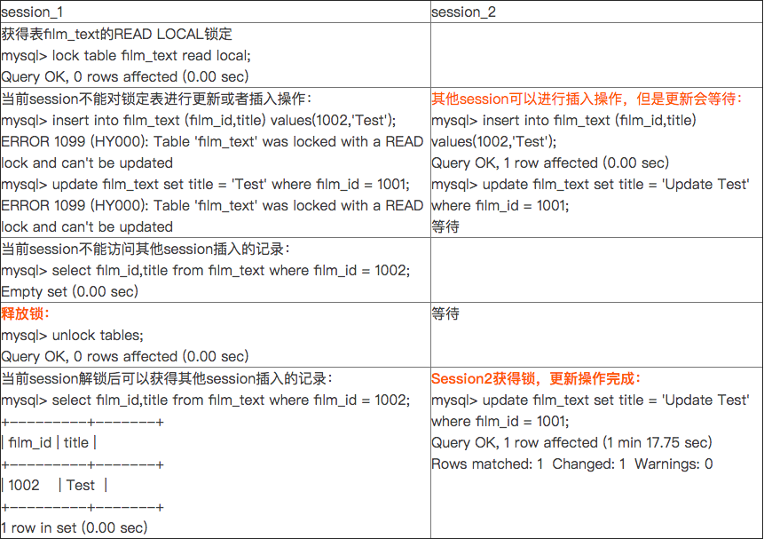
可以利用MyISAM存储引擎的并发插入特性，来解决应用中对同一表查询和插入的锁争用。例如，将concurrent_insert系统变量设为2，总是允许并发插入；同时，通过定期在系统空闲时段执行 OPTIMIZE TABLE语句来整理空间碎片，收回因删除记录而产生的中间空洞。
MyISAM的锁调度
前面讲过，MyISAM存储引擎的读锁和写锁是互斥的，读写操作是串行的。
那么，一个进程请求某个 MyISAM表的读锁，同时另一个进程也请求同一表的写锁，MySQL如何处理呢？答案是写进程先获得锁。不仅如此，即使读请求先到锁等待队列，写请求后到，写锁也会插到读锁请求之前！这是因为MySQL认为写请求一般比读请求要重要。这也正是MyISAM表不太适合于有大量更新操作和查询操作应用的原因，因为，大量的更新操作会造成查询操作很难获得读锁，从而可能永远阻塞。这种情况有时可能会变得非常糟糕！幸好我们可以通过一些设置来调节MyISAM 的调度行为。
- 通过指定启动参数low-priority-updates，使MyISAM引擎默认给予读请求以优先的权利。
2.通过执行命令SET LOW_PRIORITY_UPDATES=1，使该连接发出的更新请求优先级降低。
3.通过指定INSERT、UPDATE、DELETE语句的LOW_PRIORITY属性，降低该语句的优先级。
虽然上面3种方法都是要么更新优先，要么查询优先的方法，但还是可以用其来解决查询相对重要的应用（如用户登录系统）中，读锁等待严重的问题。
另外，MySQL也提供了一种折中的办法来调节读写冲突，即给系统参数max_write_lock_count设置一个合适的值，当一个表的读锁达到这个值后，MySQL就暂时将写请求的优先级降低，给读进程一定获得锁的机会。
上面已经讨论了写优先调度机制带来的问题和解决办法。这里还要强调一点：一些需要长时间运行的查询操作，也会使写进程“饿死”！
因此，应用中应尽量避免出现长时间运行的查询操作，不要总想用一条SELECT语句来解决问题，因为这种看似巧妙的SQL语句，往往比较复杂，执行时间较长，在可能的情况下可以通过使用中间表等措施对SQL语句做一定的“分解”，使每一步查询都能在较短时间完成，从而减少锁冲突。
如果复杂查询不可避免，应尽量安排在数据库空闲时段执行，比如一些定期统计可以安排在夜间执行。
InnoDB锁问题
InnoDB与MyISAM的最大不同有两点：一是支持事务（TRANSACTION）；二是采用了行级锁。行级锁与表级锁本来就有许多不同之处，另外，事务的引入也带来了一些新问题。
1．事务（Transaction）及其ACID属性
事务是由一组SQL语句组成的逻辑处理单元，事务具有以下4个属性，通常简称为事务的ACID属性。 原子性（Atomicity）：事务是一个原子操作单元，其对数据的修改，要么全都执行，要么全都不执行。 一致性（Consistent）：在事务开始和完成时，数据都必须保持一致状态。这意味着所有相关的数据规则都必须应用于事务的修改，以保持数据的完整性；事务结束时，所有的内部数据结构（如B树索引或双向链表）也都必须是正确的。 隔离性（Isolation）：数据库系统提供一定的隔离机制，保证事务在不受外部并发操作影响的“独立”环境执行。这意味着事务处理过程中的中间状态对外部是不可见的，反之亦然。 持久性（Durable）：事务完成之后，它对于数据的修改是永久性的，即使出现系统故障也能够保持。 银行转帐就是事务的一个典型例子。
2．并发事务处理带来的问题
相对于串行处理来说，并发事务处理能大大增加数据库资源的利用率，提高数据库系统的事务吞吐量，从而可以支持更多的用户。但并发事务处理也会带来一些问题，主要包括以下几种情况。
- 1.更新丢失（Lost Update）：当两个或多个事务选择同一行，然后基于最初选定的值更新该行时，由于每个事务都不知道其他事务的存在，就会发生丢失更新问题－－最后的更新覆盖了由其他事务所做的更新。例如，两个编辑人员制作了同一文档的电子副本。每个编辑人员独立地更改其副本，然后保存更改后的副本，这样就覆盖了原始文档。最后保存其更改副本的编辑人员覆盖另一个编辑人员所做的更改。如果在一个编辑人员完成并提交事务之前，另一个编辑人员不能访问同一文件，则可避免此问题。
- 2.脏读（Dirty Reads）：一个事务正在对一条记录做修改，在这个事务完成并提交前，这条记录的数据就处于不一致状态；这时，另一个事务也来读取同一条记录，如果不加控制，第二个事务读取了这些“脏”数据，并据此做进一步的处理，就会产生未提交的数据依赖关系。这种现象被形象地叫做"脏读"。
- 3.不可重复读（Non-Repeatable Reads）：一个事务在读取某些数据后的某个时间，再次读取以前读过的数据，却发现其读出的数据已经发生了改变、或某些记录已经被删除了！这种现象就叫做“不可重复读”。
- 4.幻读（Phantom Reads）：一个事务按相同的查询条件重新读取以前检索过的数据，却发现其他事务插入了满足其查询条件的新数据，这种现象就称为“幻读”。
3．事务隔离级别
在上面讲到的并发事务处理带来的问题中，“更新丢失”通常是应该完全避免的。但防止更新丢失，并不能单靠数据库事务控制器来解决，需要应用程序对要更新的数据加必要的锁来解决，因此，防止更新丢失应该是应用的责任。
“脏读”、“不可重复读”和“幻读”，其实都是数据库读一致性问题，必须由数据库提供一定的事务隔离机制来解决。数据库实现事务隔离的方式，基本上可分为以下两种。
1.一种是在读取数据前，对其加锁，阻止其他事务对数据进行修改。
2.另一种是不用加任何锁，通过一定机制生成一个数据请求时间点的一致性数据快照（Snapshot)，并用这个快照来提供一定级别（语句级或事务级）的一致性读取。
从用户的角度来看，好像是数据库可以提供同一数据的多个版本，因此，这种技术叫做数据多版本并发控制（MultiVersion Concurrency Control，简称MVCC或MCC），也经常称为多版本数据库。
数据库的事务隔离越严格，并发副作用越小，但付出的代价也就越大，因为事务隔离实质上就是使事务在一定程度上 “串行化”进行，这显然与“并发”是矛盾的。
同时，不同的应用对读一致性和事务隔离程度的要求也是不同的，比如许多应用对“不可重复读”和“幻读”并不敏感，可能更关心数据并发访问的能力。
为了解决“隔离”与“并发”的矛盾，ISO/ANSI SQL92定义了4个事务隔离级别，每个级别的隔离程度不同，允许出现的副作用也不同，应用可以根据自己的业务逻辑要求，通过选择不同的隔离级别来平衡 “隔离”与“并发”的矛盾。表20-5很好地概括了这4个隔离级别的特性。
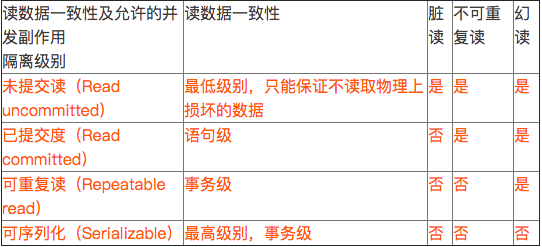
最后要说明的是：各具体数据库并不一定完全实现了上述4个隔离级别，例如，Oracle只提供Read committed和Serializable两个标准隔离级别，另外还提供自己定义的Read only隔离级别；
SQL Server除支持上述ISO/ANSI SQL92定义的4个隔离级别外，还支持一个叫做“快照”的隔离级别，但严格来说它是一个用MVCC实现的Serializable隔离级别。
MySQL 支持全部4个隔离级别，但在具体实现时，有一些特点，比如在一些隔离级别下是采用MVCC一致性读，但某些情况下又不是，这些内容在后面的章节中将会做进一步介绍。
获取InnoDB行锁争用情况
可以通过检查InnoDB_row_lock状态变量来分析系统上的行锁的争夺情况：
xmysql> show status like 'innodb_row_lock%';+-------------------------------+-------+| Variable_name | Value |+-------------------------------+-------+| InnoDB_row_lock_current_waits | 0 || InnoDB_row_lock_time | 0 || InnoDB_row_lock_time_avg | 0 || InnoDB_row_lock_time_max | 0 || InnoDB_row_lock_waits | 0 |+-------------------------------+-------+5 rows in set (0.01 sec)如果发现锁争用比较严重，如InnoDB_row_lock_waits和InnoDB_row_lock_time_avg的值比较高，还可以通过设置InnoDB Monitors来进一步观察发生锁冲突的表、数据行等，并分析锁争用的原因。 具体方法如下：
xxxxxxxxxxmysql> CREATE TABLE innodb_monitor(a INT) ENGINE=INNODB;Query OK, 0 rows affected (0.14 sec)然后就可以用下面的语句来进行查看：mysql> Show innodb status\G;*************************** 1. row *************************** Type: InnoDB Name:Status:……------------TRANSACTIONS------------Trx id counter 0 117472192Purge done for trx's n:o < 0 117472190 undo n:o < 0 0History list length 17Total number of lock structs in row lock hash table 0LIST OF TRANSACTIONS FOR EACH SESSION:---TRANSACTION 0 117472185, not started, process no 11052, OS thread id 1158191456MySQL thread id 200610, query id 291197 localhost root---TRANSACTION 0 117472183, not started, process no 11052, OS thread id 1158723936MySQL thread id 199285, query id 291199 localhost rootShow innodb status…监视器可以通过发出下列语句来停止查看：
xxxxxxxxxxmysql> DROP TABLE innodb_monitor;Query OK, 0 rows affected (0.05 sec)设置监视器后，在SHOW INNODB STATUS的显示内容中，会有详细的当前锁等待的信息，包括表名、锁类型、锁定记录的情况等，便于进行进一步的分析和问题的确定。
打开监视器以后，默认情况下每15秒会向日志中记录监控的内容，如果长时间打开会导致.err文件变得非常的巨大，所以用户在确认问题原因之后，要记得删除监控表以关闭监视器，或者通过使用“--console”选项来启动服务器以关闭写日志文件。
InnoDB的行锁模式及加锁方法
InnoDB实现了以下两种类型的行锁。
共享锁（S）：允许一个事务去读一行，阻止其他事务获得相同数据集的排他锁。 排他锁（X)：允许获得排他锁的事务更新数据，阻止其他事务取得相同数据集的共享读锁和排他写锁。 另外，为了允许行锁和表锁共存，实现多粒度锁机制，InnoDB还有两种内部使用的意向锁（Intention Locks），这两种意向锁都是表锁。 意向共享锁（IS）：事务打算给数据行加行共享锁，事务在给一个数据行加共享锁前必须先取得该表的IS锁。 意向排他锁（IX）：事务打算给数据行加行排他锁，事务在给一个数据行加排他锁前必须先取得该表的IX锁。
上述锁模式的兼容情况具体如表20-6所示。
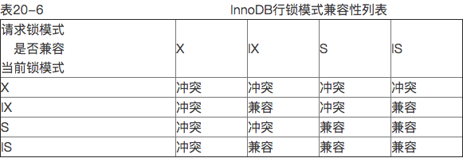
如果一个事务请求的锁模式与当前的锁兼容，InnoDB就将请求的锁授予该事务；反之，如果两者不兼容，该事务就要等待锁释放。
意向锁是InnoDB自动加的，不需用户干预。对于UPDATE、DELETE和INSERT语句，InnoDB会自动给涉及数据集加排他锁（X)；对于普通SELECT语句，InnoDB不会加任何锁；事务可以通过以下语句显示给记录集加共享锁或排他锁。
xxxxxxxxxx共享锁（S）：SELECT * FROM table_name WHERE ... LOCK IN SHARE MODE。排他锁（X)：SELECT * FROM table_name WHERE ... FOR UPDATE。用SELECT ... IN SHARE MODE获得共享锁，主要用在需要数据依存关系时来确认某行记录是否存在，并确保没有人对这个记录进行UPDATE或者DELETE操作。
但是如果当前事务也需要对该记录进行更新操作，则很有可能造成死锁，对于锁定行记录后需要进行更新操作的应用，应该使用SELECT... FOR UPDATE方式获得排他锁。
在如表20-7所示的例子中，使用了SELECT ... IN SHARE MODE加锁后再更新记录，看看会出现什么情况，其中actor表的actor_id字段为主键。 表20-7 InnoDB存储引擎的共享锁例子
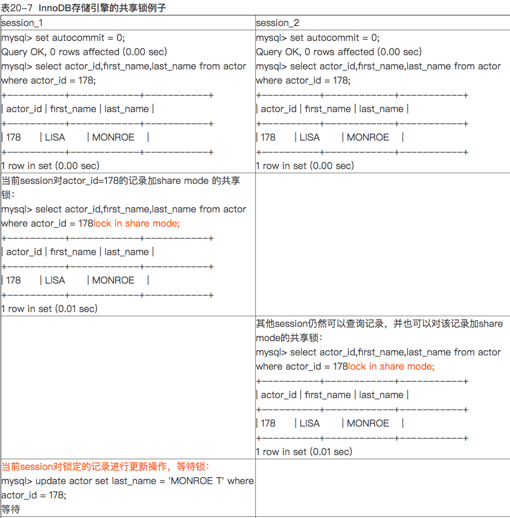 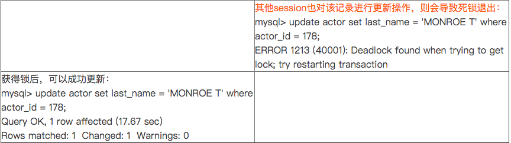
当使用SELECT...FOR UPDATE加锁后再更新记录，出现如表20-8所示的情况。
表20-8 InnoDB存储引擎的排他锁例子
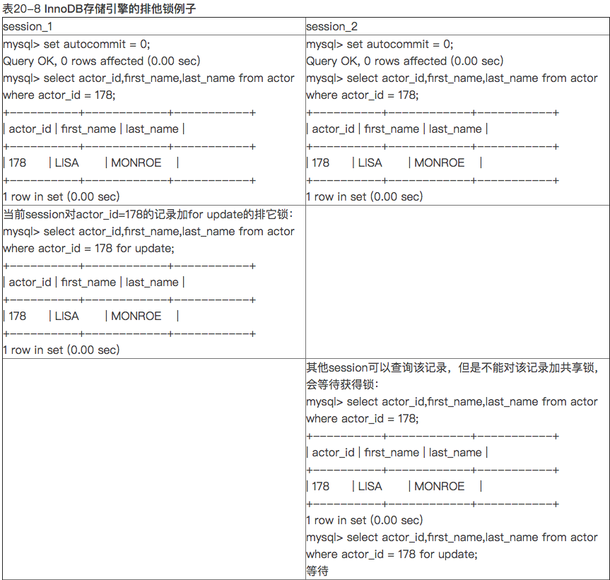 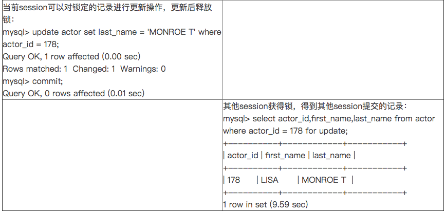
InnoDB行锁实现方式
InnoDB行锁是通过给索引上的索引项加锁来实现的，这一点MySQL与Oracle不同，后者是通过在数据块中对相应数据行加锁来实现的。
InnoDB这种行锁实现特点意味着：只有通过索引条件检索数据，InnoDB才使用行级锁，否则，InnoDB将使用表锁！
在实际应用中，要特别注意InnoDB行锁的这一特性，不然的话，可能导致大量的锁冲突，从而影响并发性能。下面通过一些实际例子来加以说明。
（1）在不通过索引条件查询的时候，InnoDB确实使用的是表锁，而不是行锁。
在如表20-9所示的例子中，开始tab_no_index表没有索引：
xxxxxxxxxxmysql> create table tab_no_index(id int,name varchar(10)) engine=innodb;Query OK, 0 rows affected (0.15 sec)mysql> insert into tab_no_index values(1,'1'),(2,'2'),(3,'3'),(4,'4');Query OK, 4 rows affected (0.00 sec)Records: 4 Duplicates: 0 Warnings: 0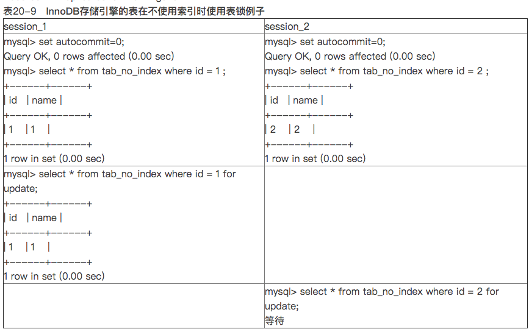
在如表20 -9所示的例子中，看起来session1只给一行加了排他锁，但session2在请求其他行的排他锁时，却出现了锁等待！ 原因就是在没有索引的情况下，InnoDB只能使用表锁。当我们给其增加一个索引后，InnoDB就只锁定了符合条件的行，如表20-10所示。
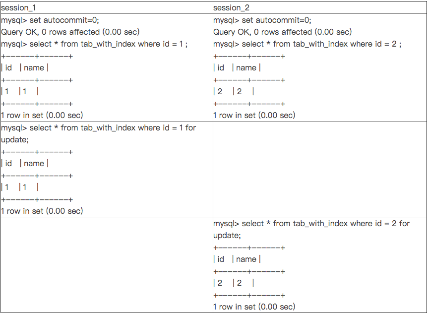
(2）由于MySQL的行锁是针对索引加的锁，不是针对记录加的锁，所以虽然是访问不同行的记录，但是如果是使用相同的索引键，是会出现锁冲突的。应用设计的时候要注意这一点。
xxxxxxxxxx在如表20-11所示的例子中，表tab_with_index的id字段有索引，name字段没有索引：mysql> alter table tab_with_index drop index name;Query OK, 4 rows affected (0.22 sec)Records: 4 Duplicates: 0 Warnings: 0mysql> insert into tab_with_index values(1,'4');Query OK, 1 row affected (0.00 sec)mysql> select * from tab_with_index where id = 1;+------+------+| id | name |+------+------+| 1 | 1 || 1 | 4 |+------+------+2 rows in set (0.00 sec)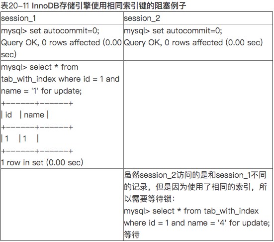
（3）当表有多个索引的时候，不同的事务可以使用不同的索引锁定不同的行，另外，不论是使用主键索引、唯一索引或普通索引，InnoDB都会使用行锁来对数据加锁。
xxxxxxxxxx在如表20-12所示的例子中，表tab_with_index的id字段有主键索引，name字段有普通索引：mysql> alter table tab_with_index add index name(name);Query OK, 5 rows affected (0.23 sec)Records: 5 Duplicates: 0 Warnings: 0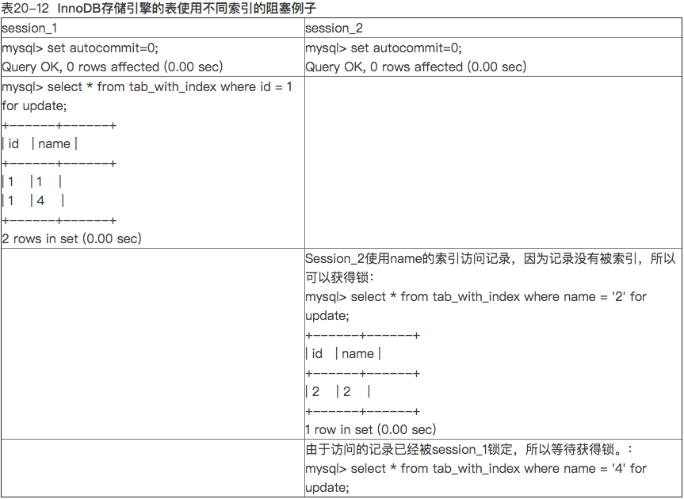
（4）即便在条件中使用了索引字段，但是否使用索引来检索数据是由MySQL通过判断不同执行计划的代价来决定的，
如果MySQL认为全表扫描效率更高，比如对一些很小的表，它就不会使用索引，这种情况下InnoDB将使用表锁，而不是行锁。 因此，在分析锁冲突时，别忘了检查SQL的执行计划，以确认是否真正使用了索引。
在下面的例子中，检索值的数据类型与索引字段不同，虽然MySQL能够进行数据类型转换，但却不会使用索引，从而导致InnoDB使用表锁。通过用explain检查两条SQL的执行计划，我们可以清楚地看到了这一点。
例子中tab_with_index表的name字段有索引，但是name字段是varchar类型的，如果where条件中不是和varchar类型进行比较，则会对name进行类型转换，而执行的全表扫描。
xxxxxxxxxxmysql> alter table tab_no_index add index name(name);Query OK, 4 rows affected (8.06 sec)Records: 4 Duplicates: 0 Warnings: 0mysql> explain select * from tab_with_index where name = 1 \G*************************** 1. row *************************** id: 1 select_type: SIMPLE table: tab_with_index type: ALLpossible_keys: name key: NULL key_len: NULL ref: NULL rows: 4 Extra: Using where1 row in set (0.00 sec)mysql> explain select * from tab_with_index where name = '1' \G*************************** 1. row *************************** id: 1 select_type: SIMPLE table: tab_with_index type: refpossible_keys: name key: name key_len: 23 ref: const rows: 1 Extra: Using where1 row in set (0.00 sec)间隙锁（Next-Key锁）
当我们用范围条件而不是相等条件检索数据，并请求共享或排他锁时，InnoDB会给符合条件的已有数据记录的索引项加锁；对于键值在条件范围内但并不存在的记录，叫做“间隙（GAP)”，InnoDB也会对这个“间隙”加锁，这种锁机制就是所谓的间隙锁（Next-Key锁）。
举例来说，假如emp表中只有101条记录，其empid的值分别是 1,2,...,100,101，下面的SQL： Select * from emp where empid > 100 for update;
是一个范围条件的检索，InnoDB不仅会对符合条件的empid值为101的记录加锁，也会对empid大于101（这些记录并不存在）的“间隙”加锁。
InnoDB使用间隙锁的目的，一方面是为了防止幻读，以满足相关隔离级别的要求，对于上面的例子，要是不使用间隙锁，如果其他事务插入了empid大于100的任何记录，那么本事务如果再次执行上述语句，就会发生幻读；另外一方面，是为了满足其恢复和复制的需要.
很显然，在使用范围条件检索并锁定记录时，InnoDB这种加锁机制会阻塞符合条件范围内键值的并发插入，这往往会造成严重的锁等待。因此，在实际应用开发中，尤其是并发插入比较多的应用，我们要尽量优化业务逻辑，尽量使用相等条件来访问更新数据，避免使用范围条件。
还要特别说明的是，InnoDB除了通过范围条件加锁时使用间隙锁外，如果使用相等条件请求给一个不存在的记录加锁，InnoDB也会使用间隙锁！ 在如表20-13所示的例子中，假如emp表中只有101条记录，其empid的值分别是1,2,......,100,101。 表20-13 InnoDB存储引擎的间隙锁阻塞例子
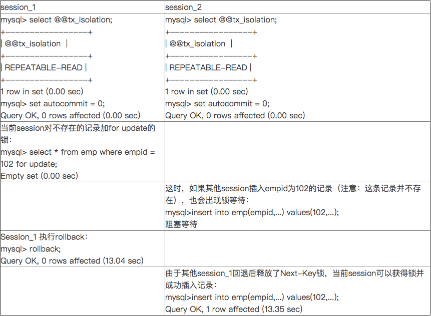
恢复和复制的需要，对InnoDB锁机制的影响
MySQL通过BINLOG录执行成功的INSERT、UPDATE、DELETE等更新数据的SQL语句，并由此实现MySQL数据库的恢复和主从复制）。MySQL的恢复机制（复制其实就是在Slave Mysql不断做基于BINLOG的恢复）有以下特点。
- 一是MySQL的恢复是SQL语句级的，也就是重新执行BINLOG中的SQL语句。这与Oracle数据库不同，Oracle是基于数据库文件块的。
- 二是MySQL的Binlog是按照事务提交的先后顺序记录的，恢复也是按这个顺序进行的。这点也与Oralce不同，Oracle是按照系统更新号（System Change Number，SCN）来恢复数据的，每个事务开始时，Oracle都会分配一个全局唯一的SCN，SCN的顺序与事务开始的时间顺序是一致的。
从上面两点可知，MySQL的恢复机制要求：在一个事务未提交前，其他并发事务不能插入满足其锁定条件的任何记录，也就是不允许出现幻读，这已经超过了ISO/ANSI SQL92“可重复读”隔离级别的要求，实际上是要求事务要串行化。
这也是许多情况下，InnoDB要用到间隙锁的原因，比如在用范围条件更新记录时，无论在Read Commited或是Repeatable Read隔离级别下，InnoDB都要使用间隙锁，但这并不是隔离级别要求的，有关InnoDB在不同隔离级别下加锁的差异在下一小节还会介绍。
另外，对于“insert into target_tab select * from source_tab where ...”和“create table new_tab ...select ... From source_tab where ...(CTAS)”这种SQL语句，用户并没有对source_tab做任何更新操作，但MySQL对这种SQL语句做了特别处理。先来看如表20-14的例子。
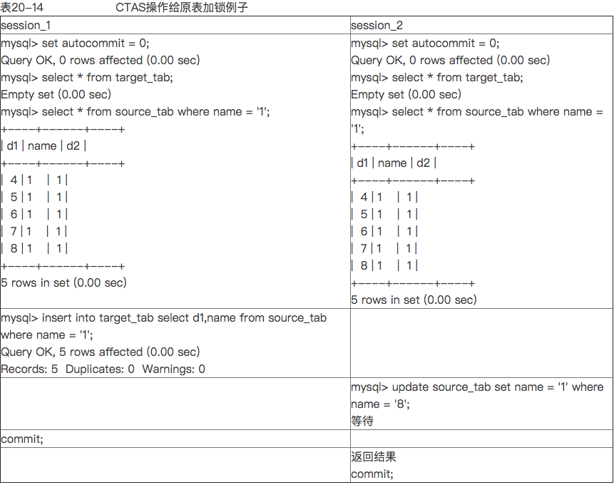
在上面的例子中，只是简单地读 source_tab表的数据，相当于执行一个普通的SELECT语句，用一致性读就可以了。ORACLE正是这么做的，它通过MVCC技术实现的多版本数据来实现一致性读，不需要给source_tab加任何锁。
我们知道InnoDB也实现了多版本数据，对普通的SELECT一致性读，也不需要加任何锁；但这里InnoDB却给source_tab加了共享锁，并没有使用多版本数据一致性读技术！
MySQL为什么要这么做呢？其原因还是为了保证恢复和复制的正确性。因为不加锁的话，如果在上述语句执行过程中，其他事务对source_tab做了更新操作，就可能导致数据恢复的结果错误。
为了演示这一点，我们再重复一下前面的例子，不同的是在session_1执行事务前，先将系统变量 innodb_locks_unsafe_for_binlog的值设置为“on”（其默认值为off），具体结果如表20-15所示。
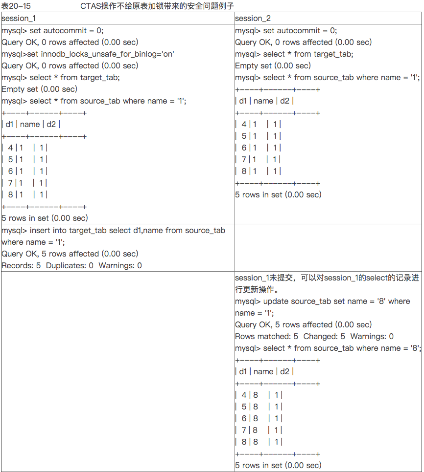

从上可见，设置系统变量innodb_locks_unsafe_for_binlog的值为“on”后，InnoDB不再对source_tab加锁，结果也符合应用逻辑，但是如果分析BINLOG的内容：
xxxxxxxxxx......SET TIMESTAMP=1169175130;BEGIN;# at 274#070119 10:51:57 server id 1 end_log_pos 105 Query thread_id=1 exec_time=0 error_code=0SET TIMESTAMP=1169175117;update source_tab set name = '8' where name = '1';# at 379#070119 10:52:10 server id 1 end_log_pos 406 Xid = 5COMMIT;# at 406#070119 10:52:14 server id 1 end_log_pos 474 Query thread_id=2 exec_time=0 error_code=0SET TIMESTAMP=1169175134;BEGIN;# at 474#070119 10:51:29 server id 1 end_log_pos 119 Query thread_id=2 exec_time=0 error_code=0SET TIMESTAMP=1169175089;insert into target_tab select d1,name from source_tab where name = '1';# at 593#070119 10:52:14 server id 1 end_log_pos 620 Xid = 7COMMIT;......可以发现，在BINLOG中，更新操作的位置在INSERT...SELECT之前，如果使用这个BINLOG进行数据库恢复，恢复的结果与实际的应用逻辑不符；如果进行复制，就会导致主从数据库不一致！
通过上面的例子，我们就不难理解为什么MySQL在处理“Insert into target_tab select * from source_tab where ...”和“create table new_tab ...select ... From source_tab where ...”时要给source_tab加锁，而不是使用对并发影响最小的多版本数据来实现一致性读。
还要特别说明的是，如果上述语句的SELECT是范围条件，InnoDB还会给源表加间隙锁（Next-Lock）。
因此，INSERT...SELECT...和 CREATE TABLE...SELECT...语句，可能会阻止对源表的并发更新，造成对源表锁的等待。
如果查询比较复杂的话，会造成严重的性能问题，我们在应用中应尽量避免使用。实际上，MySQL将这种SQL叫作不确定（non-deterministic）的SQL，不推荐使用。
如果应用中一定要用这种SQL来实现业务逻辑，又不希望对源表的并发更新产生影响，可以采取以下两种措施：
- 一是采取上面示例中的做法，将innodb_locks_unsafe_for_binlog的值设置为“on”，强制MySQL使用多版本数据一致性读。但付出的代价是可能无法用binlog正确地恢复或复制数据，因此，不推荐使用这种方式。
- 二是通过使用“select * from source_tab ... Into outfile”和“load data infile ...”语句组合来间接实现，采用这种方式MySQL不会给source_tab加锁。 InnoDB在不同隔离级别下的一致性读及锁的差异
前面讲过，锁和多版本数据是InnoDB实现一致性读和ISO/ANSI SQL92隔离级别的手段，因此，在不同的隔离级别下，InnoDB处理SQL时采用的一致性读策略和需要的锁是不同的。同时，数据恢复和复制机制的特点，也对一些SQL的一致性读策略和锁策略有很大影响。将这些特性归纳成如表20-16所示的内容，以便读者查阅。
从表20-16可以看出：对于许多SQL，隔离级别越高，InnoDB给记录集加的锁就越严格（尤其是使用范围条件的时候），产生锁冲突的可能性也就越高，从而对并发性事务处理性能的影响也就越大。
因此，我们在应用中，应该尽量使用较低的隔离级别，以减少锁争用的机率。实际上，通过优化事务逻辑，大部分应用使用Read Commited隔离级别就足够了。
对于一些确实需要更高隔离级别的事务，可以通过在程序中执行SET SESSION TRANSACTION ISOLATION LEVEL REPEATABLE READ或SET SESSION TRANSACTION ISOLATION LEVEL SERIALIZABLE动态改变隔离级别的方式满足需求。
什么时候使用表锁
对于InnoDB表，在绝大部分情况下都应该使用行级锁，因为事务和行锁往往是我们之所以选择InnoDB表的理由。但在个别特殊事务中，也可以考虑使用表级锁。
- 第一种情况是：事务需要更新大部分或全部数据，表又比较大，如果使用默认的行锁，不仅这个事务执行效率低，而且可能造成其他事务长时间锁等待和锁冲突，这种情况下可以考虑使用表锁来提高该事务的执行速度。
- 第二种情况是：事务涉及多个表，比较复杂，很可能引起死锁，造成大量事务回滚。这种情况也可以考虑一次性锁定事务涉及的表，从而避免死锁、减少数据库因事务回滚带来的开销。
当然，应用中这两种事务不能太多，否则，就应该考虑使用MyISAM表了。
在InnoDB下，使用表锁要注意以下两点。
- (1）使用LOCK TABLES虽然可以给InnoDB加表级锁，但必须说明的是，表锁不是由InnoDB存储引擎层管理的，而是由其上一层──MySQL Server负责的，仅当autocommit=0、innodb_table_locks=1（默认设置）时，InnoDB层才能知道MySQL加的表锁，MySQL Server也才能感知InnoDB加的行锁，这种情况下，InnoDB才能自动识别涉及表级锁的死锁；否则，InnoDB将无法自动检测并处理这种死锁。有关死锁，下一小节还会继续讨论。
- (2）在用 LOCK TABLES对InnoDB表加锁时要注意，要将AUTOCOMMIT设为0，否则MySQL不会给表加锁；事务结束前，不要用UNLOCK TABLES释放表锁，因为UNLOCK TABLES会隐含地提交事务；COMMIT或ROLLBACK并不能释放用LOCK TABLES加的表级锁，必须用UNLOCK TABLES释放表锁。正确的方式见如下语句：
xxxxxxxxxx例如，如果需要写表t1并从表t读，可以按如下做：SET AUTOCOMMIT=0;LOCK TABLES t1 WRITE, t2 READ, ...;[do something with tables t1 and t2 here];COMMIT;UNLOCK TABLES;关于死锁
上文讲过，MyISAM表锁是deadlock free的，这是因为MyISAM总是一次获得所需的全部锁，要么全部满足，要么等待，因此不会出现死锁。但在InnoDB中，除单个SQL组成的事务外，锁是逐步获得的，这就决定了在InnoDB中发生死锁是可能的。如表20-17所示的就是一个发生死锁的例子。
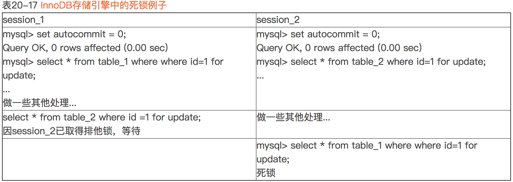
在上面的例子中，两个事务都需要获得对方持有的排他锁才能继续完成事务，这种循环锁等待就是典型的死锁。
发生死锁后，InnoDB一般都能自动检测到，并使一个事务释放锁并回退，另一个事务获得锁，继续完成事务。但在涉及外部锁，或涉及表锁的情况下，InnoDB并不能完全自动检测到死锁，这需要通过设置锁等待超时参数 >
innodb_lock_wait_timeout来解决。需要说明的是，这个参数并不是只用来解决死锁问题，在并发访问比较高的情况下，如果大量事务因无法立即获得所需的锁而挂起，会占用大量计算机资源，造成严重性能问题，甚至拖跨数据库。我们通过设置合适的锁等待超时阈值，可以避免这种情况发生。
通常来说，死锁都是应用设计的问题，通过调整业务流程、数据库对象设计、事务大小，以及访问数据库的SQL语句，绝大部分死锁都可以避免。下面就通过实例来介绍几种避免死锁的常用方法。
- (1）在应用中，如果不同的程序会并发存取多个表，应尽量约定以相同的顺序来访问表，这样可以大大降低产生死锁的机会。在下面的例子中，由于两个session访问两个表的顺序不同，发生死锁的机会就非常高！但如果以相同的顺序来访问，死锁就可以避免。
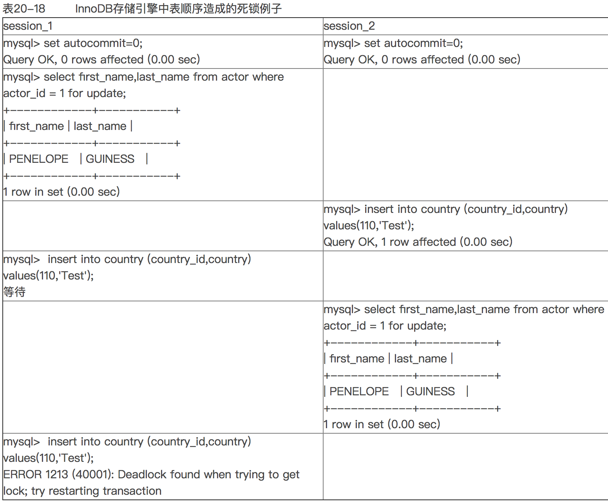
- (2）在程序以批量方式处理数据的时候，如果事先对数据排序，保证每个线程按固定的顺序来处理记录，也可以大大降低出现死锁的可能。
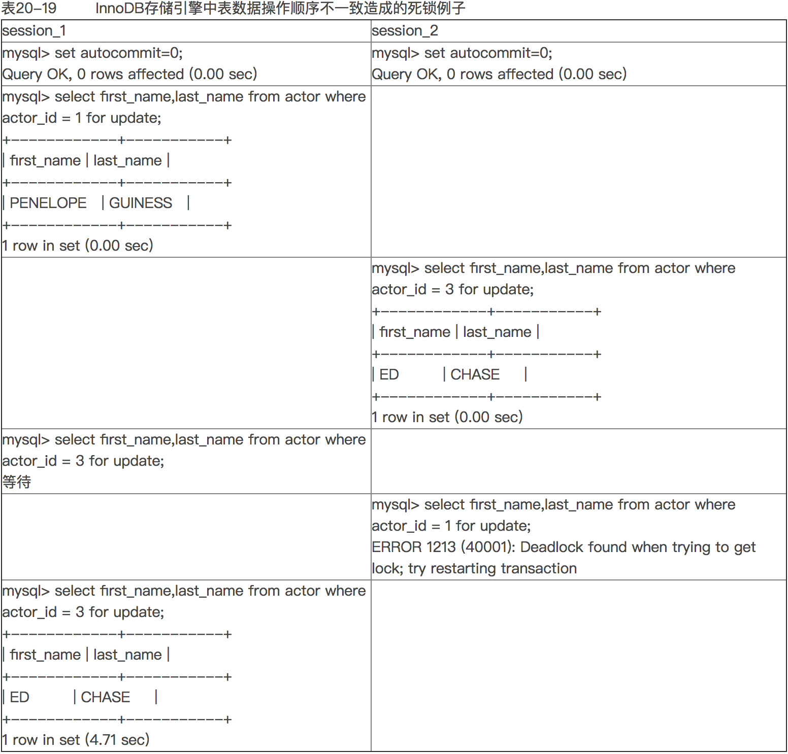
- (3）在事务中，如果要更新记录，应该直接申请足够级别的锁，即排他锁，而不应先申请共享锁，更新时再申请排他锁，因为当用户申请排他锁时，其他事务可能又已经获得了相同记录的共享锁，从而造成锁冲突，甚至死锁。
- (4）前面讲过，在REPEATABLE-READ隔离级别下，如果两个线程同时对相同条件记录用SELECT...FOR UPDATE加排他锁，在没有符合该条件记录情况下，两个线程都会加锁成功。程序发现记录尚不存在，就试图插入一条新记录，如果两个线程都这么做，就会出现死锁。这种情况下，将隔离级别改成READ COMMITTED，就可避免问题，如表20-20所示。
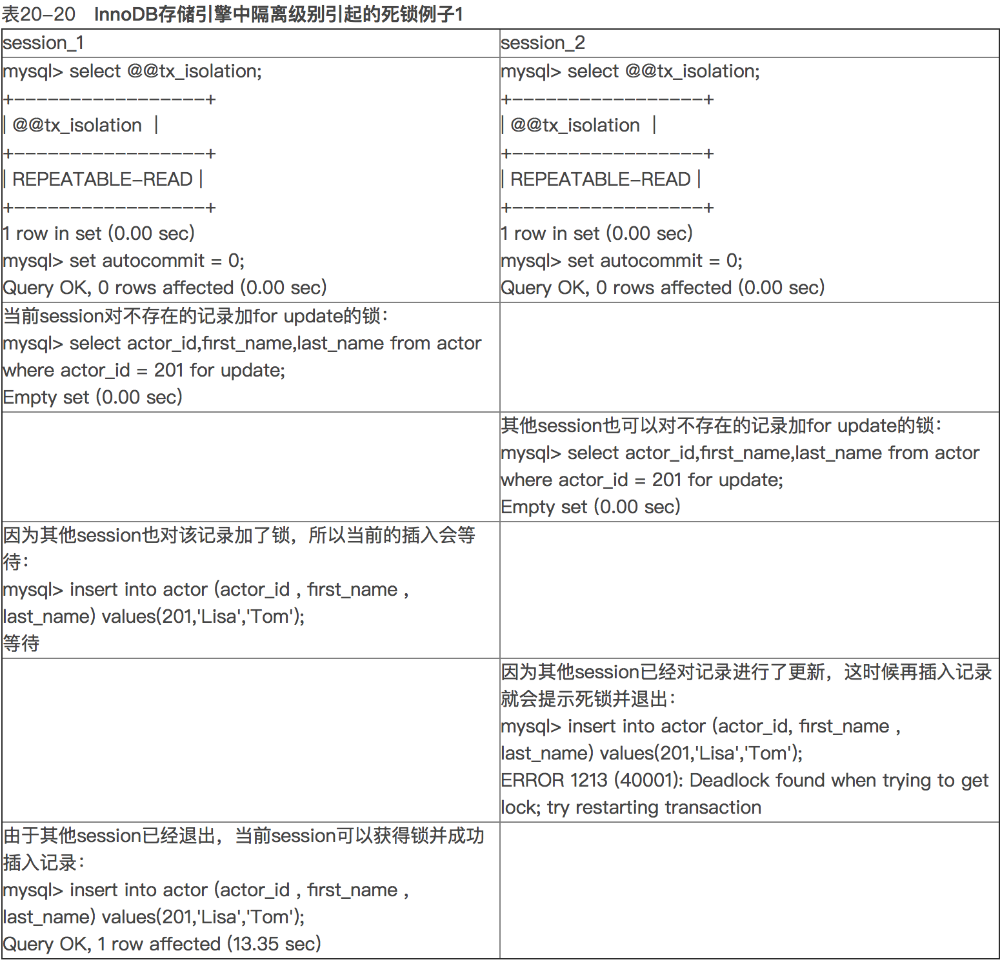
- (5）当隔离级别为READ COMMITTED时，如果两个线程都先执行SELECT...FOR UPDATE，判断是否存在符合条件的记录，如果没有，就插入记录。此时，只有一个线程能插入成功，另一个线程会出现锁等待，当第1个线程提交后，第2个线程会因主键重出错，但虽然这个线程出错了，却会获得一个排他锁！这时如果有第3个线程又来申请排他锁，也会出现死锁。 对于这种情况，可以直接做插入操作，然后再捕获主键重异常，或者在遇到主键重错误时，总是执行ROLLBACK释放获得的排他锁，如表20-21所示。
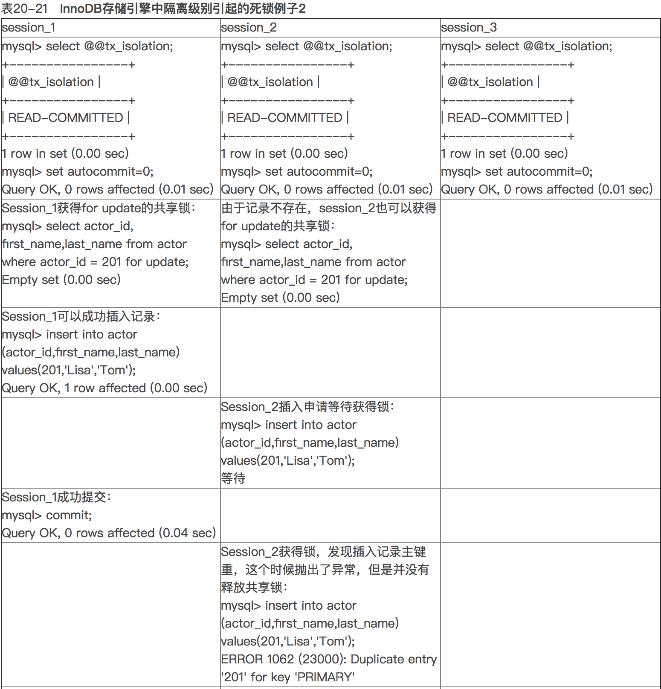 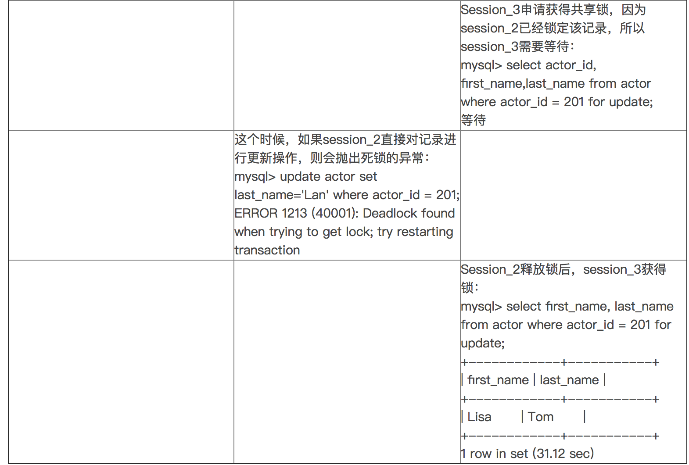
尽管通过上面介绍的设计和SQL优化等措施，可以大大减少死锁，但死锁很难完全避免。因此，在程序设计中总是捕获并处理死锁异常是一个很好的编程习惯。
如果出现死锁，可以用SHOW INNODB STATUS命令来确定最后一个死锁产生的原因。返回结果中包括死锁相关事务的详细信息，如引发死锁的SQL语句，事务已经获得的锁，正在等待什么锁，以及被回滚的事务等。
据此可以分析死锁产生的原因和改进措施。下面是一段SHOW INNODB STATUS输出的样例：
xxxxxxxxxxmysql> show innodb status \G…….------------------------LATEST DETECTED DEADLOCK------------------------070710 14:05:16*** (1) TRANSACTION:TRANSACTION 0 117470078, ACTIVE 117 sec, process no 1468, OS thread id 1197328736 insertingmysql tables in use 1, locked 1LOCK WAIT 5 lock struct(s), heap size 1216MySQL thread id 7521657, query id 673468054 localhost root updateinsert into country (country_id,country) values(110,'Test')………*** (2) TRANSACTION:TRANSACTION 0 117470079, ACTIVE 39 sec, process no 1468, OS thread id 1164048736 starting index read, thread declared inside InnoDB 500mysql tables in use 1, locked 14 lock struct(s), heap size 1216, undo log entries 1MySQL thread id 7521664, query id 673468058 localhost root statisticsselect first_name,last_name from actor where actor_id = 1 for update*** (2) HOLDS THE LOCK(S):………*** (2) WAITING FOR THIS LOCK TO BE GRANTED:………*** WE ROLL BACK TRANSACTION (1)……小结
重点介绍了MySQL中MyISAM表级锁和InnoDB行级锁的实现特点，并讨论了两种存储引擎经常遇到的锁问题和解决办法。 对于MyISAM的表锁，主要讨论了以下几点：
- （1）共享读锁（S）之间是兼容的，但共享读锁（S）与排他写锁（X）之间，以及排他写锁（X）之间是互斥的，也就是说读和写是串行的。
- （2）在一定条件下，MyISAM允许查询和插入并发执行，我们可以利用这一点来解决应用中对同一表查询和插入的锁争用问题。
- （3）MyISAM默认的锁调度机制是写优先，这并不一定适合所有应用，用户可以通过设置LOW_PRIORITY_UPDATES参数，或在INSERT、UPDATE、DELETE语句中指定LOW_PRIORITY选项来调节读写锁的争用。
- （4）由于表锁的锁定粒度大，读写之间又是串行的，因此，如果更新操作较多，MyISAM表可能会出现严重的锁等待，可以考虑采用InnoDB表来减少锁冲突。
对于InnoDB表，本章主要讨论了以下几项内容。
- InnoDB的行锁是基于锁引实现的，如果不通过索引访问数据，InnoDB会使用表锁。
- 介绍了InnoDB间隙锁（Next-key)机制，以及InnoDB使用间隙锁的原因。
- 在不同的隔离级别下，InnoDB的锁机制和一致性读策略不同。
- MySQL的恢复和复制对InnoDB锁机制和一致性读策略也有较大影响。
- 锁冲突甚至死锁很难完全避免。
在了解InnoDB锁特性后，用户可以通过设计和SQL调整等措施减少锁冲突和死锁，包括：
- 尽量使用较低的隔离级别；
- 精心设计索引，并尽量使用索引访问数据，使加锁更精确，从而减少锁冲突的机会；
- 选择合理的事务大小，小事务发生锁冲突的几率也更小；
- 给记录集显示加锁时，最好一次性请求足够级别的锁。比如要修改数据的话，最好直接申请排他锁，而不是先申请共享锁，修改时再请求排他锁，这样容易产生死锁；
- 不同的程序访问一组表时，应尽量约定以相同的顺序访问各表，对一个表而言，尽可能以固定的顺序存取表中的行。这样可以大大减少死锁的机会；
- 尽量用相等条件访问数据，这样可以避免间隙锁对并发插入的影响；
- 不要申请超过实际需要的锁级别；除非必须，查询时不要显示加锁；
- 对于一些特定的事务，可以使用表锁来提高处理速度或减少死锁的可能。